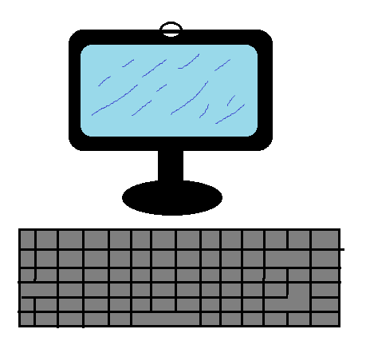
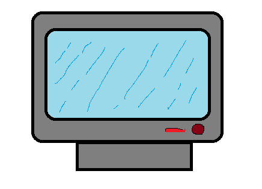
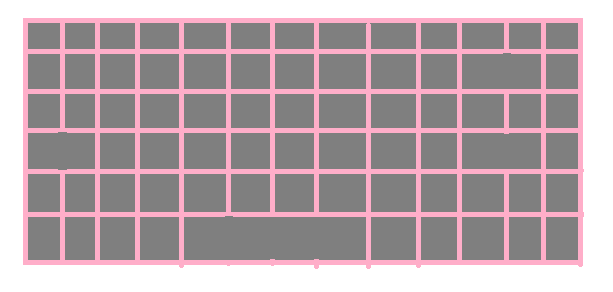
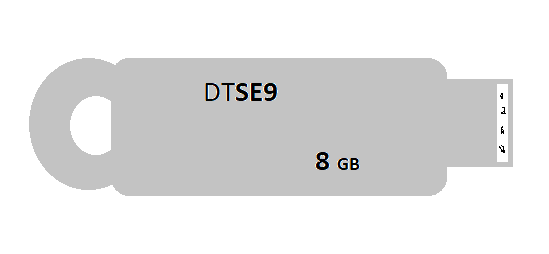

el computador es una herramienta revolucionaria, sus inicios datan desde hace muchos a�os atras. es una
herramienta que ha ido evolucionando con el tiempo. hasta convertirse lo que conocemos hoy en dia. acontinuacion
encontraras una pagina web donde encontraras informacion hacerca de los perifericos que tiene un computador:...
perifericos de entrada
perifericos de salida
perifericos mixtos
clase 10_2
tipos de perifericos
| periferico de entrada |
periferico de salida |
periferico mixto |
|

|

|

|